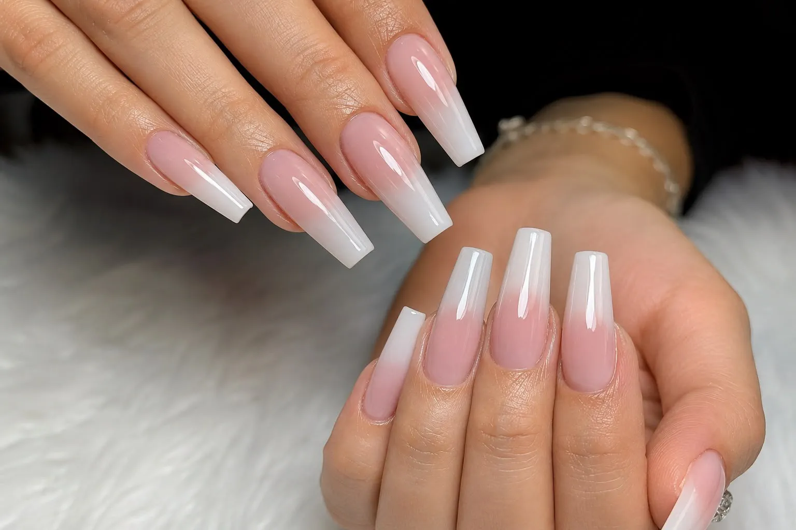
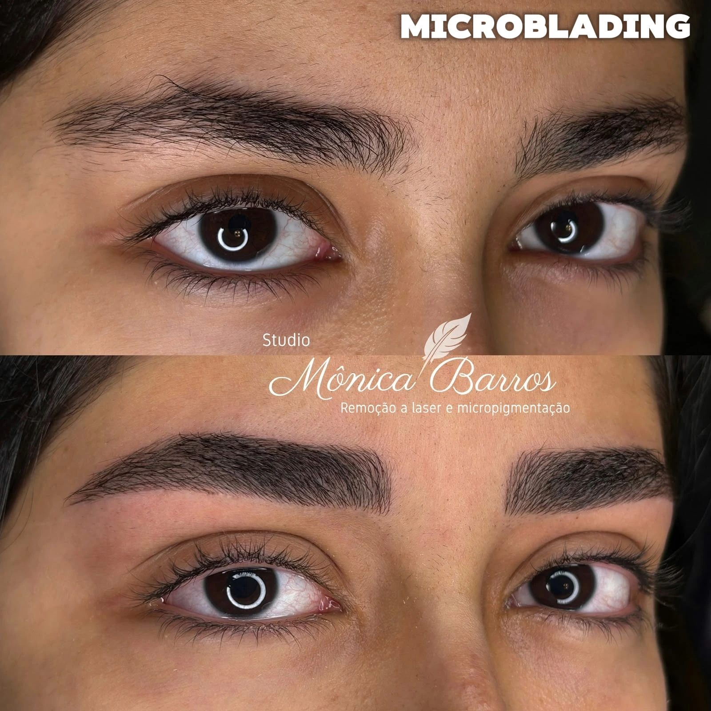
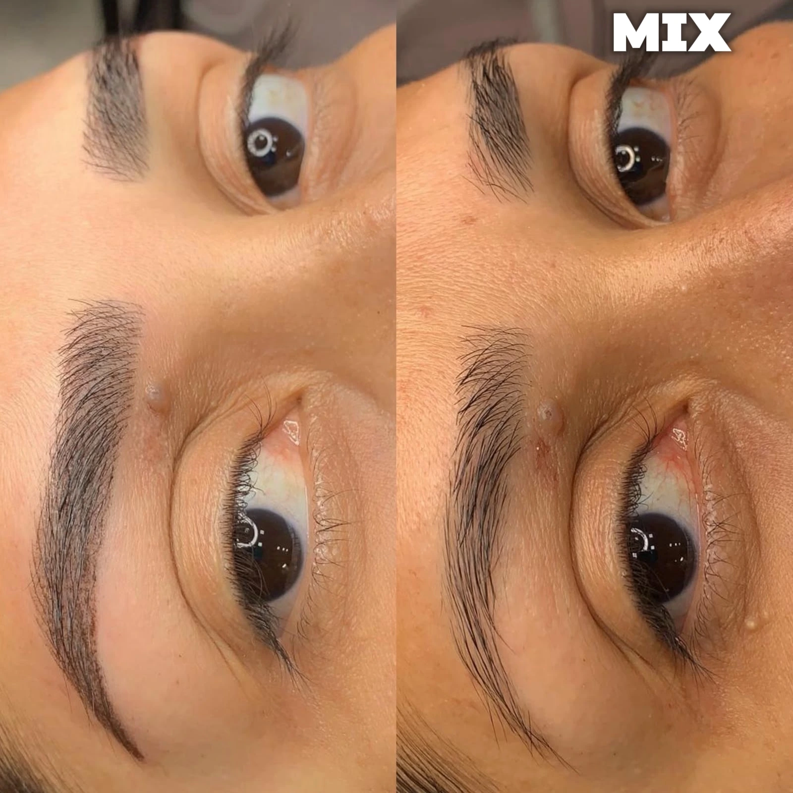
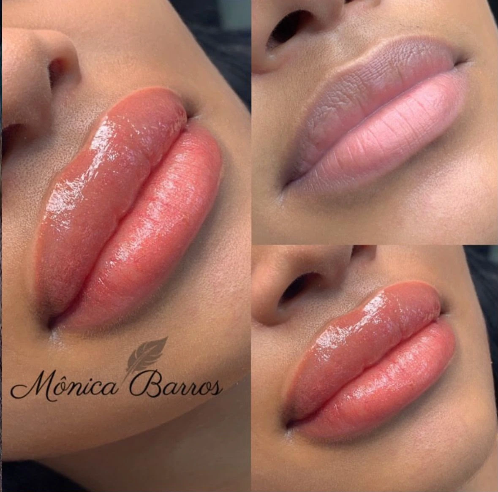
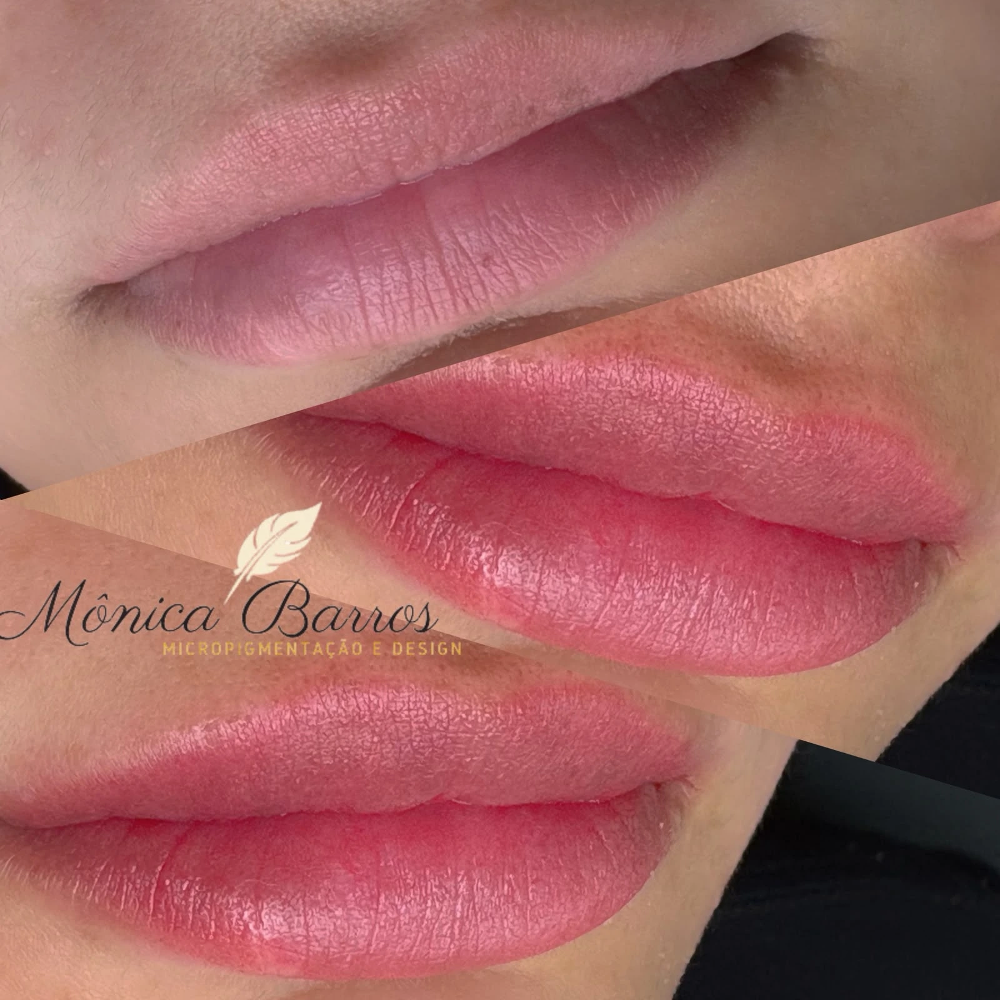
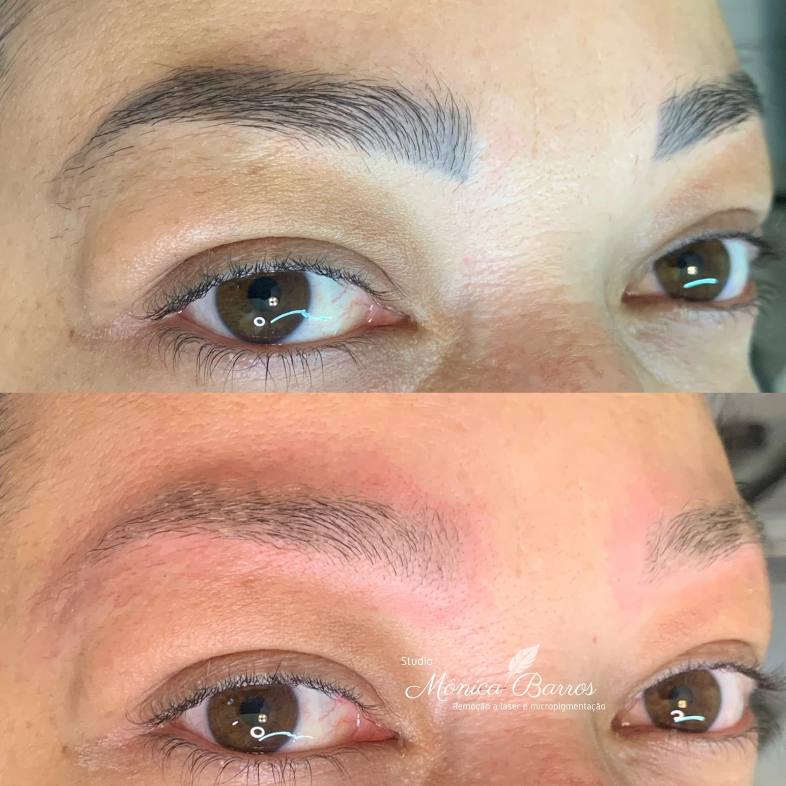

Micropigmentação Labial
- Realce da cor e do contorno
- Neutralização de lábios escurecidos
- Resultado personalizado e natural
Procedimentos personalizados para valorizar sua beleza, corrigir trabalhos antigos e recuperar sua autoestima com naturalidade e segurança.



Casos reais de micropigmentação e remoções com tecnologia avançada, preservando a saúde da pele.



Micropigmentação de Sobrancelha



Micropigmentação Labial



Remoção a Laser
Entre em contato para tirar dúvidas, consultar valores e verificar os horários disponíveis.
Antes do procedimento, analiso seu caso, suas expectativas e as condições da pele ou da região que será tratada.
O atendimento é realizado de forma individualizada, com atenção à higiene, segurança e aos detalhes de cada técnica.
Após o atendimento, você recebe orientações. Quando indicado, fazemos acompanhamento para avaliar cicatrização e retoques.
Sou Mônica Barros, especialista em sobrancelhas e apaixonada por transformar olhares de forma natural, segura e personalizada.
Atuo na área da beleza desde 2011 e sou especializada em micropigmentação desde 2015. Conquistei mais de 35 certificações em técnicas avançadas como microblading, shadow, labial e remoção a laser.
Durante duas temporadas no Egito, atendi aproximadamente 1.800 clientes, levando minha técnica para um público internacional exigente.
No Studio Mônica Barros, cada atendimento respeita os seus traços e personalidade, buscando resultados harmoniosos que elevam sua autoestima.
Laser de última geração exclusivo para nossos pacientes.
Protocolos baseados nos melhores centros do mundo.


Agende sua avaliação agora e tire todas as suas dúvidas diretamente com quem realiza o procedimento.
chat Quero agendar